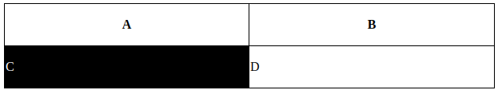

[CSS] Selector(選択子)
こんにちは。明月です。
CSSでSelectorというのはHTMLドキュメントにスタイルを付けるような指示子ということです。このSelectorは単一のタグを設定も可能し、復讐のタグの設定も可能です。
そして、タグだけの指示だと特定タグを選択するのは大変ですが、アトリビュート、配列順番なのでも選択が可能です。
参照リンク - https://www.w3schools.com/cssref/css_selectors.asp
CSS Selectorを確認するように先にHTMLドキュメントを作成しましょう。
<div id="test">
<table>
<thead>
<tr>
<th>A</th>
<th>B</th>
</tr>
</thead>
<tbody>
<tr>
<td>C</td>
<td>D</td>
</tr>
</tbody>
</table>
</div>
上のHTMLタグは普通のテーブルタグです。HTMLタグを作成したことがある方なら構造がすく理解すると思いますね。
そうすると我々は「tbody」タグの１番の「tr」タグの１版「td」タグを選択したいならどうしましょうか？
簡単にタグで選択すると「table#test > tbody > tr:nth-child(0) > td:nth-child(0)」になります。
意味としてはtableのアトリビュートのiｄがtestのタグの直下派生のtbodyの直下派生のtrタグの０番目の直下派生のtdタグの0番目のタグを指しています。
複雑ですね。でもタグを指しる時にはこんなに細かく全てのタグ名を書く必要はないです。
table{
border-top:1px solid #000;
border-left:1px solid #000;
border-spacing: 0px;
padding:0px;
}
th{
border-bottom:1px solid #000;
border-right:1px solid #000;
width:500px;
height:50px;
}
td{
border-bottom:1px solid #000;
border-right:1px solid #000;
width:500px;
height:50px;
}
div#test > table > tbody > tr > td:nth-child(1){
background-color:#000;
color:#FFF;
}

タグでスタイルを定義するのはそんなに難しくないですね。
それなら、CSS Selectorに関して纏めます。
| 選択子 | 説明 |
|---|---|
| .class | class=”class”の全てのオブジェクトを選択 |
| #id | id=”id”のオブジェクトを選択(タグのidはページの雄一が仕様です。) |
| * | 全体選択子全てのオブジェクトを選択 |
| element | 要素選択子 - 指定した要素を選択 |
| element1,element2 | 要素選択子 - 選択する要素を様々を指定(element1とelement2を選択) |
| element1 element2 | 子選択子 - 指定された親要素の指定された派生要素の全て要素を指定(element1の派生の全てelement2) |
| element>element | 子選択子 - 指定された親要素の直下の派生要素だけ指定(elementの直下の派生element2) |
| element+element | 隣接選択子 - 指定された要素と同じレーベルの次の要素を指定 |
| element1~element2 | element1要素の後である全てのelement2要素を指定 |
| [attribute] | 属性選択子 - 指定された属性を持っている全て要素を指定 |
| [attribute=value] | 属性選択子 - 指定された属性の値を持っている全ての要素を指定 |
| [attribute~=value] | 属性選択子 - 指定された属性に指定された値を含めている全ての要素を指定 |
| [attribute|=value] | 属性選択子 - 指定された属性の値が指定された値で始まる全ての要素を指定 |
| [attribute^=value] | 属性選択子 - 指定された属性の値が指定された値で始まる全ての要素を指定 |
| [attribute$=value] | 属性選択子 - 指定された属性が指定された値で終わる全ての要素を指定 |
| [attribute*=value] | 属性選択子 - 指定された属性値が指定された値を含めている全ての要素を指定 |
| :active | 全ての活性化になっている要素を選択 |
| :after | 指定された要素の次を選択 |
| :before | 指定された要素の前を選択 |
| :checked | 全てのcheckedされた要素を選択 |
| :disabled | 全てのdisabledされた要素を選択 |
| :empty | 派生ノードがない要素を選択 |
| :enabled | 全てのenabledされた要素を選択 |
| :first-child | 指定された要素の初めの派生ノードを選択 |
| :first-letter | 指定された要素の初めの文字を選択 |
| :first-line | 指定された要素の初め行を選択 |
| :first-of-type | 指定された要素の初めの派生ノードの全ての要素を選択 |
| :focus | 全てのフォーカスされた要素を選択 |
| :hover | マウスがhoverされた要素を選択 |
| :in-range | 指定された範囲内の値で入力要素を選択 |
| :invalid | 間違って値を持っている全ての入力要素を選択 |
| :lang(language) | 指定された値の言語でされている要素を選択 |
| :last-child | 指定された派生ノードの最後要素を選択 |
| :last-of-type | 指定された要素の最後の派生ノードの全ての要素を選択 |
| :not | 指定された要素がない要素を選択 |
| :nth-child(n) | 指定された要素と同じレベルの(n)番目の要素を選択 |
| :nth-last-child(n) | 指定された要素と同じレベルの後から(ｎ)番目の要素を選択 |
| :nth-last-of-type(n) | 最後ノードから計算、親の２つ目に指定された要素の全ての要素を選択 |
| :nth-of-type(n) | 親の２つ目に指定された要素の全ての要素を選択 |
| :only-of-type | 親の雄一な指定された要素の全ての要素を選択 |
| :only-child | 派生ノードが一つの要素を選択 |
| :optional | 指定された必須属性がない要素を選択 |
| :out-of-range | 指定された範囲外になっている入力要素を選択 |
| :read-only | 読み取り専用の入力要素を選択 |
| :read-write | 読み取り専用がない入力要素を選択 |
| :required | 指定された必須属性の要素を選択 |
| :root | ドキュメントのルートの要素を選択 |
| ::selection | ユーザによって選択された要素の一部を選択 |
| :target | targetに指定された要素を選択 |
| :valid | 有効な値を持っている全ての入力要素を選択 |
| :visited | 訪問したページのリンクの要素 |
纏めてみると量がかなりありますね。部分的にセレクトの種類別で分けて例や詳しく説明します。
- [CSS] ブラウザから開発する方法 (developer mode)2019/12/25 07:54:31
- [CSS] 色スタイル、グラデーション2019/12/24 07:37:22
- [CSS] アニメーション (animation)2019/12/20 20:51:38
- [CSS] トランスフォーム (transform)2019/12/19 13:00:26
- [CSS] トランジション(transition)2019/12/18 20:33:57
- [CSS] Columnスタイル2019/12/17 19:52:56
- [CSS] 整列スタイル (float)2019/12/17 00:08:54
- [CSS] 位置(position),表示(display)スタイル2019/12/13 20:08:50
- [CSS] border(枠)、余白スタイル - border, margin, padding2019/12/12 20:16:43
- [CSS] 文字スタイル2019/12/11 21:13:22
- [CSS] その他の疑似選択子 - link, visited, target, enabled, disabled, not, active, hover, focus2019/12/10 07:31:28
- [CSS] 疑似要素選択子 - fist-line, first-letter, before, after2019/12/09 07:28:27
- [CSS] 範囲と指定に関する選択子(全体選択子、要素選択子、孫選択子、子選択子、隣接選択子)2019/12/06 07:27:36
- [CSS] 疑似クラス - only-child, only-of-type, empty, empty, root2019/12/05 07:29:15
- [CSS] 疑似クラス - first-child, last-child, first-of-type, last-of-type2019/12/04 07:28:37
最新投稿
- [C#] コマンド(cmd)を実行する方法(Processクラス)2020/03/31 07:15:40
- [C#] FTPに接続してファイルダウンロード、アップロードする方法2020/03/27 19:20:14
- [C#] HttpWebRequestを利用してウェブページを読み込みする方法2020/03/27 00:23:19
- [C#] Base64のエンコード、デコードする方法2020/03/26 02:19:50
- [Java] 日付フォーマット(SimpleDateFormat)を使う方法2020/03/25 00:36:53
- [Java] サーブレット(Servlet)の環境でファイルアップロード(プログレスバーでファイルアップロード状態を表示する方法)する方法2020/03/24 00:48:21
- [Java] Spring環境でファイルアップロード(プログレスバーでファイルアップロード状態を表示する方法)する方法2020/03/22 23:15:12
- [Java] FTPに接続してファイルをダウンロード、アップロードする方法(FTPClient)2020/03/20 02:44:36
- [Window] WindowでFTPサーバを構築する方法2020/03/19 03:27:22
- [Java] JSPのSpring環境でschedulerのcronを使う方法2020/03/18 00:24:32
- [Java] POIを利用してExcelを扱う方法2020/03/17 01:48:00
- [Java] PDFを出力する方法(itextpdf)2020/03/13 00:47:31
- [Java] ログライブラリ(log4j)を使う方法2020/03/12 00:54:39
- [Java] Jsonタイプのデータを使う方法(Gsonライブラリ)2020/03/11 00:30:15
- [Java] Base64をエンコード、デコードする方法2020/03/09 10:24:01